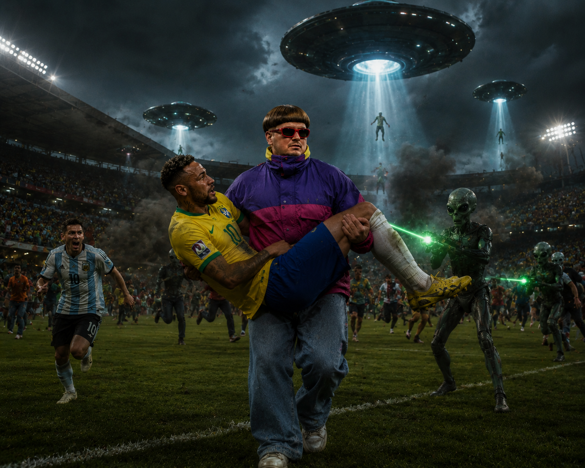

A Seleção Brasileira foi abduzida por extraterrestres no meio do jogo, diante de milhões de espectadores. Oliver Tree interrompeu o evento e salvou os jogadores no último segundo, antes do desaparecimento total.
Por: News Express
Enquanto estavam se aquecendo notaram uma movimentação estranha da arquibancada, parecia que estava prestes à acontecer um terremoto, pouco depois que começou o jogo, e que endrick fez o primeiro gol, os aliens começaram a abduzir cada pessoa, pessoa por pessoa, algumas das vítimas consiguiram fugir. Mas antes que os aliens abduzirem todo mundo, Oliver Tree chegou no seu jato para salvar as pessoas, mas como nao cabiam muitos no jato acabou salvando apenas o Neymar, seu amigo do coração, e Haaland. Após salvar eles, ligou para o Trump, que imediatamente chamou as forças armadas para lutar contra os extraterrestres. No fim as forças armadas conseguiram derrotar os extraterrestres e todos estavam bem, alguns tiveram apenas ferimentos leves, e os extraterrestres foram recolhidos para estudos científicos